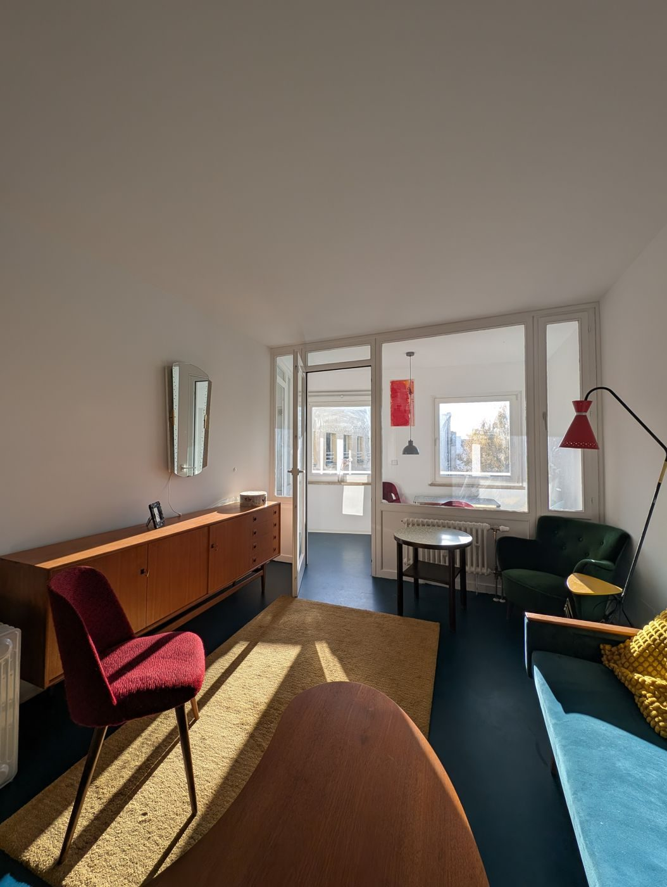
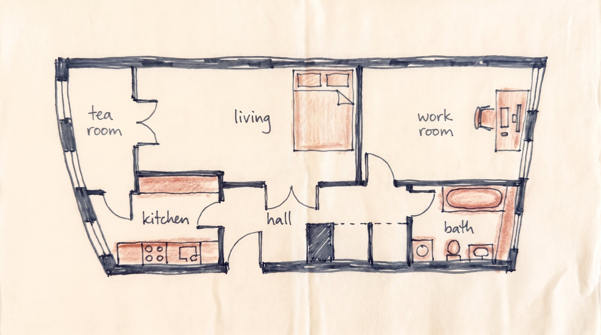
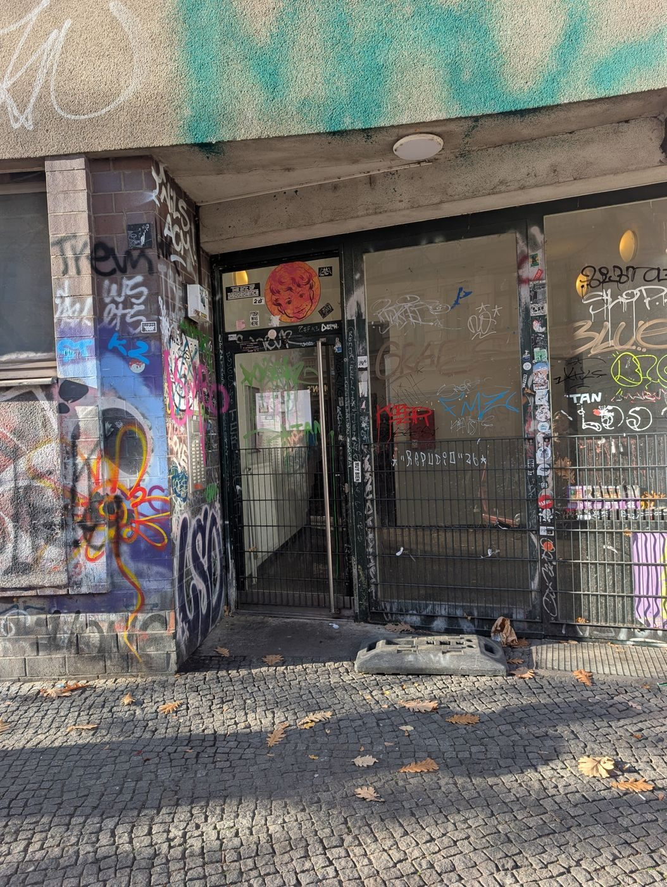

whole flat
kreuzberg
dec – may
1.12.2026 – 31.5.2027fixed-term Zwischenmiete, furnished


1.100 €warm / month
100 m to U1 Schlesisches Tor
- 1.100 €warm per month; electricity and internet extra, at cost
- 2.370 €Kaution, can be paid in 3 instalments
- 62 m²2½ rooms + tea room
- 6thtop floor
- 6 months1 Dec 2026 to 31 May 2027, fixed
- 1–2one person or a couple
the building
Bonjour Tristesse by famous architect Álvaro Siza, 1982–84.
the flat
Renovated, original mid-century furniture, workstation for home office.


floor plan

the area


Heart of Schlesisches Tor, with all its advantages and disadvantages.
This is the entrance.
apply
Applications go to Klaudia, who coordinates the flat for Natalia.
klaudiapankert@gmail.com- Who you are and what you do.
- Who would move in.
- That the dates and price work for you.
Viewings are in person, by invitation.